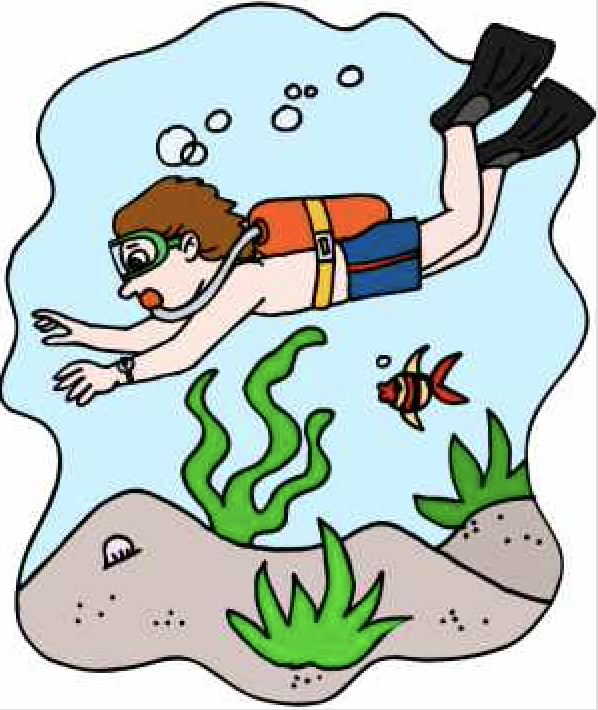

Forrige side
Men er dette virkelig det beste vi kan gjøre? Det blir jo noen unøyaktigheter i verdiene for P, v* og t0 som vi får med denne metoden. Hvor presise resultatene våre er avhenger av hvor kraftig støy det er. Hvis vi nå skulle kjenne noen egenskaper til støyen, noe vi normalt gjør, kan vi da finne en mer sofistikert metode som gir oss bedre estimater? For å finne ut av dette, la oss dykke litt ned i statistikken her... 
Neste side